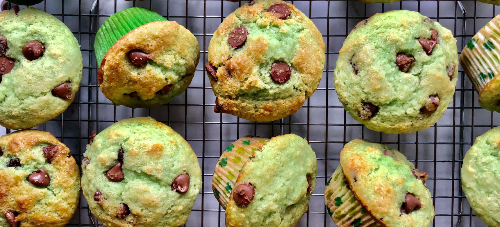
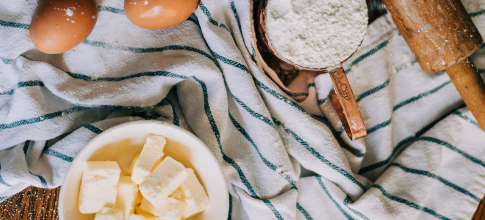

Matcha Muffin
Ingredients
Flour - 488g
Baking Soda - 2g
Baking Powder - 8g
Matcha Powder - 60g
Sugar - 288g
Butter - 288g
Salt - 4g
Egg - 288g
Water - 190g
Chocolate Chip - 160g
Steps
1) Add butter and sugar to a bowl and mix them. After, slowly pour the egg into the bowl while mixing them.
2) Add flour, matcha powder, chocolate chip and water.
3) Put them to the muffin pan and bake for 15 min at 350℉.